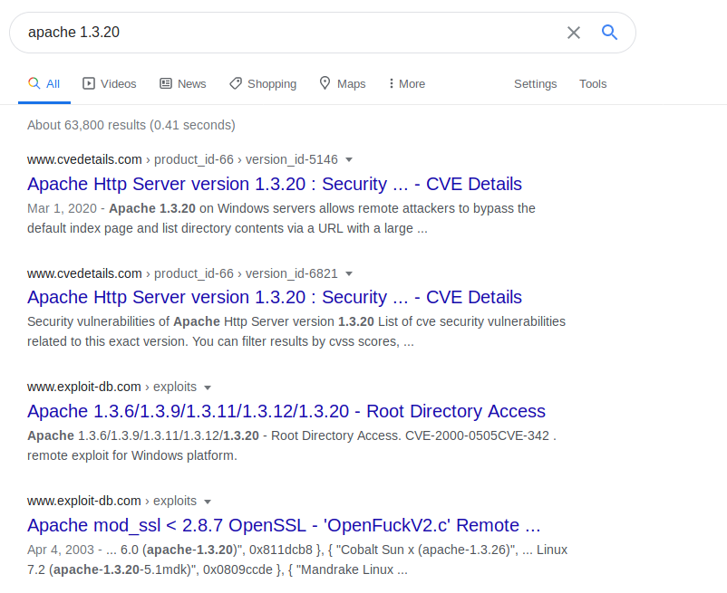
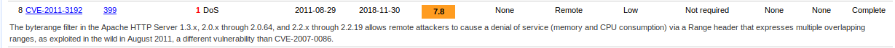
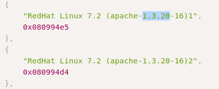

Search Apache 1.3.20 dor vulnerabilities
- cvedetails.com
- exploit-db.com

cvedetails
- Look by score => the closer to 10, the better the exploit

exploit-db
- Read code
- Adresses for Red Hat Apache 1.3.20
